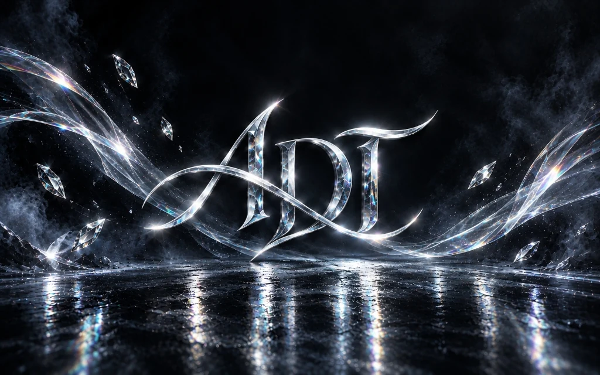

Aaradhya Dev
Tamrakar
Embedded Edge AI · Intelligent Systems · AI/ML Engineering Intelligent Systems & AI Infrastructure Researcher-in-Training — known as ADT — engineering at the boundary of embedded Edge AI, near-memory architecture, and deterministic verification. Fuse AI Fellow · NSSR DataCamp Fellow · IEEE KEC KTM Vice Chair.

Selected Systems
SPARK
Two-layer fall-detection wearable — ESP32-S3 + TFLite Micro 1D CNN at 200 Hz for eldercare.
In ProgressSTRANGLER-IPU
Near-memory ingress processing unit — 6G sub-THz line-rate ingest with CXL 3.0 pooled memory.
Active ResearchBiasAperture
Vision fairness framework — demographic bias audit with AIF360, SHAP explainability, and EU AI Act compliance.
In ProgressGCSBR
Gesture-controlled self-balancing robot — MediaPipe dual-hand control over Bluetooth. Rated 9.6/10.
CompletedClaude Desktop DSP
Dynamic system prompt framework for Claude — orchestrated AI workflow engine with context-aware routing.
ShippedFusion 360 MCP
Model Context Protocol bridge for Autodesk Fusion 360 — AI-driven parametric CAD automation.
ShippedInteractive Dev Terminal
Type 'help' or click the preset buttons above to explore.
About Sign in with Google
This site is my personal portfolio. Signing in with Google is optional and only unlocks one extra content tier below — additional research notes and specs. It's never required to read anything else on the site.
- Sign-in is handled entirely in your browser — nothing is sent to a server.
- Your name, email, and picture are used only to check which tier to show you, and stay on your device.
See the Privacy Policy for full details.
I built this tier as a lightweight way to share deeper technical notes with recruiters and collaborators without publishing them to every visitor by default — sign-in is just the simplest gate for that, not an attempt to collect data.